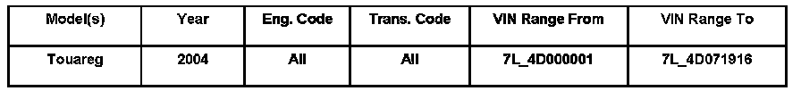
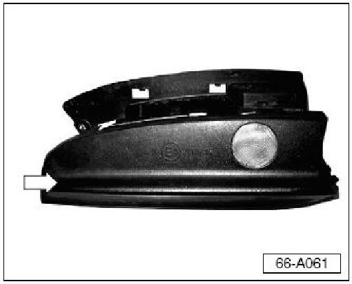
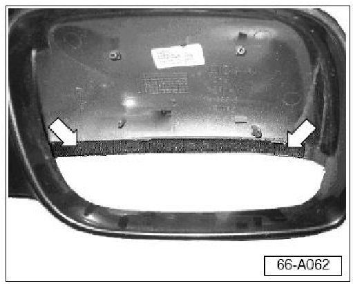
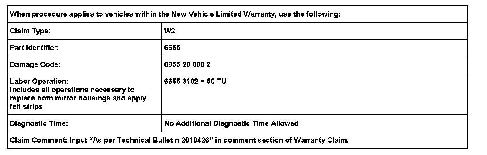
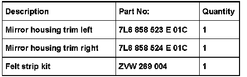

Body - Exterior Rearview Mirror Wind Noise Above 50 MPH
ConditionExterior Rear View Mirror, Wind Noise above 50 MPH
Wind noise is heard from the exterior rear view mirror housings at speeds above 50 m.p.h.

66 06 06 Nov. 16, 2006, 2010426, Supersedes Technical Bulletin Group 66 number 05-01 dated June 10, 2005 due to inclusion into ElsaWeb.
Technical Background
Too large of air gap in the lower mirror housing trims.
Production Solution
Improved exterior mirror housing lower trim as of VIN: 7L_4D071917.
Service

The improved housing trim has a spoiler added to the trim surface facing down when installed.
- Install new left and right lower mirror housing trims.See Required Parts and Tools.

- Apply felt to inside lower edge of housing as shown.
- Felt must NOT be visible when housing is reassembled.

Warranty
Required Parts and Tools

Tip: Part number(s) are for reference only.Always see ETKA for the latest part(s) information.